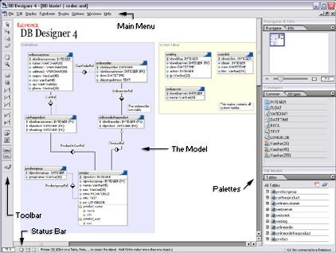
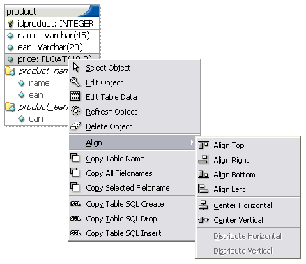
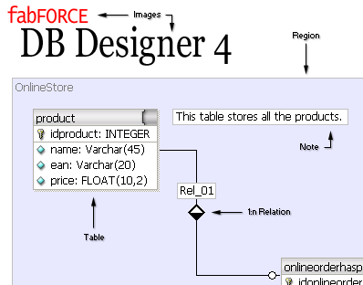

The key to successfully using DBDesigner 4 is understanding database fundamentals.
Read through the topics summarized below - these are the features, techniques, and workflows that are fundamental for working with DBDesigner 4.
In DBDesigner 4, you always work within a model. A model is a visualization of the meta-information stored in a database (e.g. Tables and Indices, Relations, ...). Although it is possible to store initial data for each table directly in the model, it only represents the meta-information, not the data itself.
You can create and maintain as many models as needed, containing a unlimited number of objects. An object can be a database table with columns and indices, a relation between two tables, a note, ...
Models can be designed by placing these objects onto the model's canvas or can be retrieved from existing databases using the reverse engineering function.
To create the according database the model can be exported as an SQL Creates Script or be created directly from within DBDesigner 4 using the synchronize function. The synchronize function is also used to alter the database automatically when the model has changed.
When DBDesigner 4 is switched to Query Mode the model can be used to build complex SQL querys and edit the tables' data.
The models are saved to XML-files or can be directly stored within the database enabling distributed access to the model.
The user interface has been based on industry standard layouting software. This makes creating your database models very easy.

DBDesigner GUI
Beside the familiar window-menus, scrollbars and status-bar DBDesigner 4 provides several palettes (floating windows) which can be used to access frequently used functions more quickly.
DBDesigner 4 makes extensive use of standard windows functions like popup-menus which are accessed by a right mouse click. They provide context sensitive functions for the objects. Drag-n-Drop is used to assigning datatypes to table columns or building table indices.

The Table Popup Menu
DBDesigner 4 supports the Multible Document Interface (MDI) which allows you to open an unlimited number of models at the same time. You can switch between the models and use standard copy and paste commands to exchange objects between the models.
The database model is created by placing several objects on the canvas, specify their attributes and relations.
To place an object you have to select the appropriate tool from the Tools-Bar. Beside the most important objects like Tables and Relations (1:1, 1:1 generalization, 1:n, 1:n non identifying, n:m) you can use Notes, Images and Regions which help to "understand" the model's structure.

The Objects
Tables
Tables represent database-tables. The table is displayed in a window-like manner. The Table's name is displayed in the titlebar, the table columns are printed below and are indicated by an icon. A key icon means this column is in the table's primary key.
Primary Key
Usually one or more columns are defined as the table's Primary Key (PK). These columns must not contain two or more data values which are equal. That makes it possible to clearly identify each record in the table by the Primary Key (e.q. productnumber).
Indices
To make the database find a specific record in the database more quickly, it is possible to define an index on one or more columns. Indices are also used to improve speed when two or more tables are joined together.
Relations
Relations can only be placed between two tables. They define the relationship between the tables and can create a Foreign Key reference. Tables can be connected by a one-to-one (e.g. person - address), one-to-many (productgroup - product) or many-to-many (e.g. employee - meeting) relation.
Notes
Notes are simple text boxes containing information about a table or structure. They can be placed anywhere on the model providing information where needed.
Images
Images can be placed on the model to visualize additional information.
Regions
Regions provide space for tables with the same attributes. The attributes are set for the region and apply to all tables placed on the region automatically. Furthermore they can be used by plugins to apply specific functions to a group of tables.
Copyright 2003 fabFORCE.net. All rights reserved. |
|